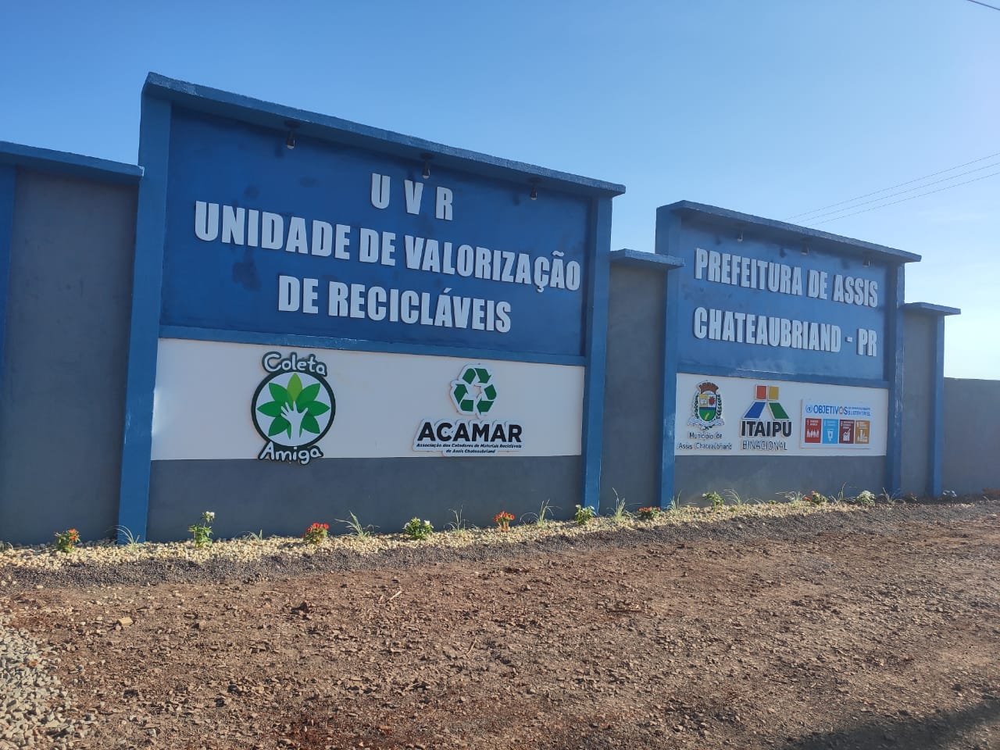

ACAMAR e a Unidade de Valorização de Recicláveis
O QUE É A UNIDADE DE VALORIZAÇÃO DE RECICLÁVEIS (UVR)?
É o local de aprimoramento da gestão de resíduos recicláveis de Assis Chateaubriand que foram previamente separados pela população e recolhidos com auxílio dos caminhões da Coleta Amiga.
Neste local, a Associação de Catadores de Materiais Recicláveis (ACAMAR) realiza triagem, prensagem e disponibilização dos recicláveis para as indústrias transformar os materiais em novos produtos de consumo. O trabalho da ACAMAR é fundamental para o ciclo da reciclagem em nosso município, gerando renda para os associados e contribuindo significativamente para a preservação ambiental.